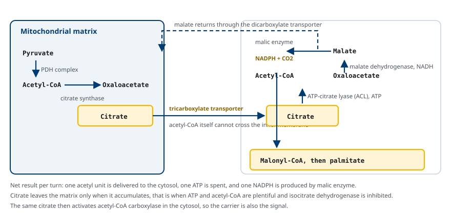
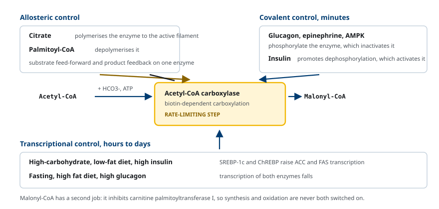
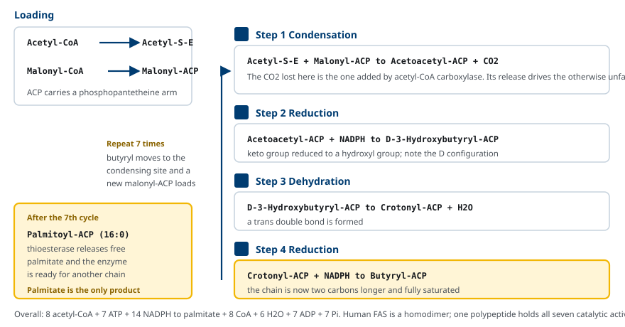
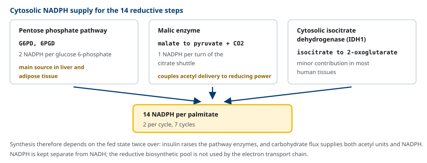
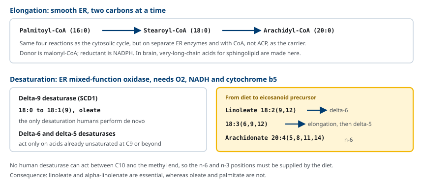

M02-W07-L02 · 대사생화학 · 지질대사
지방산 합성과 조절
Fatty Acid Synthesis and Its Regulation
학습목표
- de novo 지방산 합성이 일어나는 조직과 세포 내 구획, 그리고 그 생리적 조건을 설명한다.
- Citrate shuttle로 acetyl 단위가 세포질로 옮겨지는 과정과 그 부산물을 설명한다.
- Acetyl-CoA carboxylase가 rate-limiting step인 이유를 반응의 성질로 설명한다.
- ACC의 알로스테릭·공유결합·전사 조절을 신호와 작동 시간 단위로 구분해 설명한다.
- Fatty acid synthase 복합체의 네 반응 순환과 palmitate 생성까지의 수지를 계산한다.
- 사슬 연장과 불포화의 효소·위치와 필수지방산이 생기는 구조적 이유를 연결한다.
- NADPH의 공급원 세 가지를 들고 합성이 식후 상태에 묶여 있는 까닭을 설명한다.
선수지식
- M02-W07-L01 식이지질의 소화·흡수·운반 — 지방산의 구조와 분류, delta·omega 표기
- M02-W05-L02 Pyruvate dehydrogenase와 TCA cycle — acetyl-CoA의 생성과 citrate
- M02-W06-L03 Pentose phosphate pathway — NADPH의 공급
강의 구성
- 1. de novo 지방산 합성의 의의와 조건
- 2. Citrate shuttle: acetyl 단위의 세포질 이동
- 3. Acetyl-CoA carboxylase: 경로의 rate-limiting step
- 4. ACC의 조절: 세 층위
- 5. Fatty acid synthase 복합체와 반응 순환
- 6. NADPH의 공급
- 7. 사슬 연장과 불포화
- 8. 합성 조절의 이상과 임상적 연결
1. de novo 지방산 합성의 의의와 조건
식사로 섭취한 지방산만으로 몸의 수요가 채워지지 않거나, 반대로 탄수화물을 과잉 섭취해 남는 탄소를 저장해야 할 때 몸은 지방산을 직접 만든다. 이 과정을 de novo 지방산 합성이라고 한다.
합성의 생리적 의미는 두 가지다. 첫째, 탄수화물의 탄소를 저장 가능한 형태로 바꾼다. Glycogen 저장 용량은 간과 근육을 합쳐 약 400~500 g에 그치고, 그 이상의 탄소는 지방산으로 전환해 triacylglycerol로 저장해야 한다. 둘째, 막 지질과 신호 분자의 재료를 공급한다. 특히 폐의 surfactant에 필요한 dipalmitoylphosphatidylcholine의 palmitate, 수유 중 유선이 만드는 유지방의 지방산은 상당 부분 de novo 합성에서 온다.
합성은 간에서 가장 활발하고, 그 밖에 지방조직, 유선, 폐, 신장에서도 일어난다. 세포 내 위치는 세포질이며, 지방산 산화가 일어나는 미토콘드리아와 분리되어 있다. 이 구획 분리가 두 반대 경로가 동시에 헛돌지 않게 하는 첫 번째 장치다.
합성에 필요한 재료는 세 가지다.
- 탄소: 세포질의 acetyl-CoA. 탄수화물과 일부 아미노산에서 온다.
- 환원력: NADPH. Palmitate 한 분자에 14개가 필요하다.
- 에너지: ATP. Acetyl-CoA carboxylase 반응에 쓰인다.
세 재료가 모두 풍부한 조건은 탄수화물을 충분히 섭취한 식후 상태다. 그래서 지방산 합성은 insulin이 높고 glucagon이 낮을 때 켜지는 경로이고, 공복에는 꺼진다.
여기서 구조적 문제가 하나 생긴다. Acetyl-CoA는 미토콘드리아 기질에서 만들어지는데 합성 효소는 세포질에 있다. 그런데 acetyl-CoA는 미토콘드리아 내막을 통과하지 못한다. 다음 절이 이 문제를 다룬다.
2. Citrate shuttle: acetyl 단위의 세포질 이동
Acetyl-CoA는 pyruvate dehydrogenase 복합체 반응, 지방산 산화, 일부 아미노산 분해에서 모두 미토콘드리아 기질에 생긴다. 내막에는 acetyl-CoA를 옮기는 수송체가 없다. 그래서 몸은 acetyl 단위를 citrate에 실어 내보낸다.
과정은 네 단계다.
1. 기질에서 acetyl-CoA가 oxaloacetate와 결합해 citrate가 된다(citrate synthase). 2. Citrate가 tricarboxylate transporter를 통해 세포질로 나온다. 3. 세포질에서 ATP-citrate lyase(ACL)가 ATP를 써서 citrate를 다시 acetyl-CoA와 oxaloacetate로 가른다. 4. 남은 oxaloacetate는 malate dehydrogenase로 malate가 되고, malic enzyme이 malate를 pyruvate와 CO₂로 바꾸면서 NADPH 한 분자를 만든다. Pyruvate나 malate는 미토콘드리아로 돌아간다.

이 셔틀에는 설계상 세 가지 이점이 있다.
- 왕복 비용이 합성의 수지에 포함된다. 한 번 돌 때 ATP 한 분자를 쓰므로, 합성의 에너지 비용에 수송 비용이 계산된다.
- 환원력이 함께 공급된다. Malic enzyme 단계에서 NADPH가 생기므로, acetyl 단위의 공급과 환원력의 공급이 같은 흐름에 묶인다.
- 운반체가 곧 신호가 된다. Citrate는 ATP와 acetyl-CoA가 풍부해 isocitrate dehydrogenase가 억제될 때 기질에 쌓여 밖으로 나온다. 즉 citrate가 세포질에 많다는 것은 에너지가 남는다는 뜻이고, 뒤에서 보듯 citrate는 세포질에서 acetyl-CoA carboxylase를 직접 활성화한다.
3. Acetyl-CoA carboxylase: 경로의 rate-limiting step
세포질로 나온 acetyl-CoA는 바로 사슬에 붙지 않는다. 먼저 CO₂가 하나 붙어 탄소 세 개의 malonyl-CoA가 되어야 한다. 이 반응을 acetyl-CoA carboxylase(ACC)가 촉매하며, 이것이 지방산 합성의 rate-limiting step이고 경로의 committed step이다.
반응은 다음과 같다.
Acetyl-CoA + HCO₃⁻ + ATP → Malonyl-CoA + ADP + Pi
ACC는 biotin을 보조인자로 쓰는 carboxylase다. Biotin이 ATP를 써서 먼저 carboxyl기를 받고(carboxybiotin), 이것을 acetyl-CoA에 넘긴다. 같은 biotin 의존 기전을 pyruvate carboxylase와 propionyl-CoA carboxylase도 쓴다.
왜 이 단계가 rate-limiting step인가. 세 가지가 겹친다.
- 경로에서 처음이자 비가역적인 반응이다. ATP를 소비하므로 생리적 조건에서 역방향으로 진행하지 않는다.
- Malonyl-CoA는 지방산 합성 외에 쓰일 곳이 사실상 없다. 이 지점을 지나면 탄소가 지방산으로 갈 수밖에 없다.
- 뒤의 fatty acid synthase는 malonyl-CoA 농도에 따라 속도가 정해지는 정도로 빠르므로, 전체 유입량이 ACC에서 결정된다.
여기에 한 가지가 더 있다. Malonyl-CoA는 동시에 지방산 산화의 억제 신호다. Malonyl-CoA는 미토콘드리아 외막의 carnitine palmitoyltransferase I(CPT-I)를 억제해 긴 사슬 acyl 기가 미토콘드리아로 들어가지 못하게 한다. 그래서 ACC가 켜지면 합성이 시작되는 동시에 산화가 꺼진다. 한 대사물질이 두 경로를 반대 방향으로 동시에 조절하므로 무익한 순환(futile cycle)이 생기지 않는다.
4. ACC의 조절: 세 층위
ACC의 조절은 작동 시간 단위가 다른 세 층위로 겹쳐 있다.
(1) 알로스테릭 조절 — 수 초에서 수 분
ACC는 비활성인 단량체와 활성인 중합체(filament) 사이를 오간다.
- Citrate가 중합을 촉진해 효소를 활성화한다. Citrate는 세포질 acetyl-CoA의 공급원이므로, 기질이 풍부함을 알리는 feed-forward 신호다.
- Palmitoyl-CoA가 중합을 해체해 효소를 억제한다. 경로의 최종 산물이 자기 경로의 첫 효소를 억제하는 feedback 신호다.
하나의 효소에 feed-forward와 feedback이 함께 작용한다는 점이 이 조절의 특징이다.
(2) 공유결합 변형 — 수 분
ACC는 인산화되면 비활성, 탈인산화되면 활성이다.
- Glucagon과 epinephrine은 cAMP를 올려 인산화를 유도한다.
- AMPK는 세포의 AMP/ATP 비가 올라갈 때 활성화되어 ACC를 인산화한다. ATP를 소비하는 합성 경로를 에너지 상태에 맞춰 끄는 장치다.
- Insulin은 탈인산화를 촉진해 활성을 올린다.

(3) 전사 조절 — 수 시간에서 수 일
탄수화물이 많고 지방이 적은 식사를 지속하면 insulin과 포도당 신호가 전사인자 SREBP-1c와 ChREBP를 활성화해 ACC와 fatty acid synthase의 전사를 함께 올린다. 반대로 공복이나 고지방 식사, 높은 glucagon 상태에서는 두 효소의 전사가 줄어든다. 이 조절은 효소의 양을 바꾸므로 식이 변화에 수 일에 걸쳐 적응하는 데 쓰인다.
| 조절 방식 | 신호 | 방향 | 작동 시간 |
|---|---|---|---|
| 중합(알로스테릭) | Citrate 증가 | 활성 ↑ | 초~분 |
| 해체(알로스테릭) | Palmitoyl-CoA 증가 | 활성 ↓ | 초~분 |
| 인산화 | Glucagon, epinephrine, AMPK | 활성 ↓ | 분 |
| 탈인산화 | Insulin | 활성 ↑ | 분 |
| 전사 | 고탄수화물 식사, insulin (SREBP-1c, ChREBP) | 효소량 ↑ | 시간~일 |
5. Fatty acid synthase 복합체와 반응 순환
Malonyl-CoA가 만들어지면 나머지 과정은 하나의 효소가 처리한다. 사람의 fatty acid synthase(FAS)는 두 개의 동일한 폴리펩티드가 결합한 homodimer이며, 한 폴리펩티드 안에 일곱 가지 촉매 활성과 acyl carrier protein(ACP) 영역이 모두 들어 있다. 즉 여러 효소가 모인 복합체가 아니라 다기능 단일 단백질이다.
ACP에는 phosphopantetheine 팔이 붙어 있고, 이 팔의 -SH에 자라나는 사슬이 thioester로 매달려 활성 부위 사이를 옮겨 다닌다. Phosphopantetheine은 pantothenic acid(vitamin B₅)에서 유래하므로, coenzyme A와 보조인자의 뿌리를 공유한다.
반응은 네 단계가 한 순환을 이룬다.
1. Condensation(축합): 활성 부위의 acetyl기가 malonyl-ACP의 C2에 결합해 acetoacetyl-ACP가 되고 CO₂가 떨어져 나간다. 떨어져 나가는 CO₂는 ACC가 붙인 바로 그 CO₂다. 이 방출이 반응의 추진력이며, 탄소를 늘리지 않으면서 결합 형성을 열역학적으로 가능하게 만든다. 2. Reduction(환원): NADPH가 keto기를 환원해 D-3-hydroxybutyryl-ACP를 만든다. 입체 구조가 D형인 점이 산화 경로의 L형 중간체와 다르다. 3. Dehydration(탈수): 물이 빠지면서 trans 이중결합이 생겨 crotonyl-ACP가 된다. 4. Reduction(환원): NADPH가 이중결합을 환원해 butyryl-ACP가 된다. 사슬이 탄소 두 개 길어졌다.

순환이 일곱 번 반복되면 탄소 16개의 palmitoyl-ACP가 되고, thioesterase가 thioester 결합을 끊어 유리 palmitate를 내놓는다. 사람의 FAS는 여기서 멈추므로 세포질 합성의 산물은 palmitate(16:0) 하나뿐이다.
전체 수지는 다음과 같다.
8 Acetyl-CoA + 7 ATP + 14 NADPH + 14 H⁺ → Palmitate + 8 CoA + 6 H₂O + 7 ADP + 7 Pi + 14 NADP⁺
여덟 개의 acetyl-CoA 가운데 일곱 개가 ACC를 거쳐 malonyl-CoA가 되고, 하나는 첫 축합의 시작 단위로 그대로 쓰인다.
6. NADPH의 공급
Palmitate 한 분자를 만드는 데 NADPH 14개가 들어간다. 이 양을 대는 공급원은 세 가지다.
- Pentose phosphate pathway: glucose 6-phosphate가 G6PD와 6-phosphogluconate dehydrogenase를 거치며 NADPH 두 개를 만든다. 간과 지방조직에서 가장 큰 공급원이다.
- Malic enzyme: citrate shuttle이 한 번 돌 때마다 NADPH 한 개가 생긴다.
- 세포질 isocitrate dehydrogenase(IDH1): 사람의 대부분 조직에서 기여는 작다.

공급원의 구성에서 두 가지가 읽힌다. 첫째, 세 경로가 모두 포도당 대사에 연결되어 있다. 지방산 합성은 탄소와 환원력을 모두 탄수화물에서 받으므로 식후 상태에 묶여 있다. 둘째, NADPH와 NADH는 분리된 풀이다. NADPH는 환원적 생합성과 항산화에 쓰이고 electron transport chain에는 들어가지 않는다. 같은 세포에서 산화적 분해와 환원적 합성을 동시에 운영하기 위한 구분이다.
7. 사슬 연장과 불포화
세포질 합성은 palmitate에서 끝나지만 몸이 필요한 지방산은 더 길고 불포화된 것들이다. 그 변형은 smooth ER 막의 다른 효소들이 담당한다.
사슬 연장(elongation)은 세포질 순환과 같은 네 반응을 반복한다. 다만 운반체가 ACP가 아니라 CoA이고, 효소도 별개의 ER 막단백이다. 탄소 공여체는 여기서도 malonyl-CoA이며 환원제는 NADPH다. Palmitate가 stearate(18:0)로, 더 나아가 탄소 20개 이상의 very-long-chain 지방산으로 연장된다. 뇌에서는 sphingolipid에 필요한 긴 지방산이 이 경로로 만들어지므로, 연장 효소의 결함은 신경계 증상으로 나타난다.
불포화(desaturation)는 ER의 mixed-function oxidase 계가 수행한다. 반응에는 산소, NADH, cytochrome b5가 필요하고, 전자가 두 곳으로 흘러 산소 한 분자가 물 두 분자로 환원된다.
- Delta-9 desaturase(SCD1): stearate를 oleate(18:1 n-9)로 바꾼다. 사람이 새로 만들 수 있는 거의 유일한 이중결합이다.
- Delta-6, delta-5 desaturase: 이미 C9 이상에 이중결합이 있는 지방산에만 작용해 carboxyl 쪽에 추가 이중결합을 넣는다.

여기서 필수지방산이 생기는 이유가 구조적으로 설명된다. 사람의 어떤 desaturase도 C10과 methyl 말단 사이에 이중결합을 넣지 못한다. 따라서 n-6이나 n-3 위치에 이중결합이 있는 지방산은 합성이 불가능하고 식사에서 와야 한다. 섭취한 linoleate(18:2 n-6)는 delta-6 desaturation, 연장, delta-5 desaturation을 거쳐 arachidonate(20:4 n-6)가 되고, 이것이 eicosanoid의 전구체가 된다.
8. 합성 조절의 이상과 임상적 연결
지방산 합성은 단일 유전자 질환보다 대사 상태의 변화로 문제가 되는 경로다. 임상에서 마주치는 양상은 세 가지로 묶인다.
(1) 합성 과잉과 비알코올성 지방간
insulin 저항성 상태에서는 간에서 이상한 조합이 나타난다. 포도당 처리는 둔해지는데 SREBP-1c를 통한 지방 합성 경로는 오히려 켜져 있다. 그 결과 간의 de novo 지방산 합성이 늘고, 만들어진 지방산이 triacylglycerol로 간세포에 쌓인다. 탄수화물, 특히 fructose를 과잉 섭취하면 이 경향이 커진다. Fructose는 glucokinase 조절을 거치지 않고 간으로 들어가 삼탄당 인산을 공급하므로 합성 기질을 직접 늘린다.
(2) 산화와 합성의 전환이 깨질 때
Malonyl-CoA에 의한 CPT-I 억제는 식후에 산화를 끄는 장치다. 공복에서는 AMPK와 glucagon이 ACC를 끄면서 malonyl-CoA가 줄고, CPT-I 억제가 풀려 산화가 켜진다. 조절되지 않은 당뇨병에서는 insulin이 작용하지 못해 이 전환이 공복 쪽으로 고정된다. 지방 동원과 지방산 산화가 멈추지 않고, acetyl-CoA가 과잉 공급되어 케톤체 생성으로 흘러간다. 다음 두 수업에서 이 경로를 자세히 다룬다.
(3) 합성 효소를 표적으로 하는 약물
| 표적 | 작용 | 임상 적용과 근거 |
|---|---|---|
| ACC | 억제해 malonyl-CoA 감소 | 간 지방 합성 억제, 지방간 치료 연구 단계. Malonyl-CoA가 줄면 triacylglycerol 혈중 농도가 오를 수 있어 주의가 필요하다 |
| FAS | 억제 | 종양이 지방산 합성에 의존하는 점을 이용한 항암 연구 단계 |
| SCD1 | 억제 | 포화·불포화 비율 조절, 연구 단계 |
| AMPK | 활성화(metformin의 간접 효과 포함) | ACC 인산화로 합성 억제, 산화 촉진 |
확인 문항
Acetyl-CoA는 미토콘드리아에서 만들어지는데 지방산 합성은 세포질에서 일어난다. 몸이 이 문제를 해결하는 방식과 그 방식이 가지는 두 가지 부수적 이점을 설명하라.
해설
Acetyl-CoA는 미토콘드리아 내막을 통과하지 못하므로 oxaloacetate와 결합해 citrate가 된 뒤 tricarboxylate transporter로 세포질로 나오고, 세포질에서 ATP-citrate lyase가 ATP를 써서 다시 acetyl-CoA와 oxaloacetate로 가른다. 부수적 이점은 두 가지다. 첫째, 남은 oxaloacetate가 malate를 거쳐 malic enzyme 반응을 지날 때 NADPH가 생기므로 탄소 공급과 환원력 공급이 같은 흐름에 묶인다. 둘째, citrate는 에너지가 남을 때만 기질에 쌓여 밖으로 나오고 세포질에서 ACC를 활성화하므로, 운반체가 동시에 조절 신호로 작동한다.
Malonyl-CoA 농도 하나로 지방산 합성과 산화가 동시에 조절되는 기전을 설명하고, 조절되지 않은 1형 당뇨병에서 이 조절이 어떻게 깨지는지 서술하라.
해설
Malonyl-CoA는 FAS 순환의 탄소 공여체이므로 농도가 높으면 합성이 진행된다. 동시에 malonyl-CoA는 미토콘드리아 외막의 CPT-I를 억제해 긴 사슬 acyl-CoA가 미토콘드리아로 들어가지 못하게 하므로 산화가 꺼진다. 따라서 ACC가 켜지면 합성이 켜지고 산화가 꺼지며, ACC가 꺼지면 그 반대가 된다. 조절되지 않은 1형 당뇨병에서는 insulin이 작용하지 않아 ACC가 인산화된 비활성 상태로 고정되고 malonyl-CoA가 낮게 유지된다. CPT-I 억제가 풀려 지방산 산화가 멈추지 않으므로 acetyl-CoA가 과잉 생성되고 케톤체 생성으로 흘러 ketoacidosis로 이어진다.
지방산 합성 경로와 산화 경로는 서로의 역반응이 아니다. 두 경로를 구분하는 차이를 다섯 가지 들라.
해설
첫째, 세포 내 위치가 다르다. 합성은 세포질, 산화는 미토콘드리아 기질에서 일어난다. 둘째, 운반체가 다르다. 합성은 ACP의 phosphopantetheine 팔, 산화는 CoA를 쓴다. 셋째, 보조인자가 다르다. 합성은 NADPH를 소비하고 산화는 FAD와 NAD⁺를 환원한다. 넷째, 중간체의 입체 구조가 다르다. 합성의 hydroxyacyl 중간체는 D형, 산화의 것은 L형이다. 다섯째, 탄소 단위가 다르다. 합성은 malonyl-CoA에서 두 탄소를 받고 ACC 단계에서 ATP를 소비하지만, 산화는 acetyl-CoA를 직접 떼어 낸다. 이 차이들 때문에 두 경로가 독립적으로 조절될 수 있다.
사람은 oleic acid(18:1 n-9)는 만들 수 있지만 linoleic acid(18:2 n-6)는 만들 수 없다. 두 분자의 구조를 들어 그 차이를 설명하라.
해설
사람의 desaturase는 carboxyl 탄소에서 세어 C9까지만 새 이중결합을 넣을 수 있다. Oleic acid의 이중결합은 C9와 C10 사이에 있으므로 delta-9 desaturase(SCD1)가 stearate(18:0)에서 직접 만들 수 있다. Linoleic acid는 C9뿐 아니라 C12에도 이중결합이 있고, C12는 methyl 말단에서 여섯 번째 탄소(n-6)에 해당한다. 사람의 어떤 desaturase도 C10과 methyl 말단 사이에는 이중결합을 넣지 못하므로 이 분자는 합성할 수 없고 식사로 섭취해야 한다. 따라서 하류 산물인 arachidonate와 eicosanoid의 공급도 식이 linoleate에 의존한다.
Fatty acid synthase 순환의 첫 반응에서 CO₂가 떨어져 나간다. 그런데 그 CO₂는 바로 앞 단계에서 ATP를 써서 붙인 것이다. 이렇게 붙였다 떼는 과정이 왜 필요한가.
해설
두 acyl기를 직접 결합시키는 축합 반응은 열역학적으로 불리하다. ACC가 ATP를 써서 acetyl-CoA에 CO₂를 붙여 malonyl-CoA를 만들면, 축합 반응에서 그 CO₂가 떨어져 나가며 반응을 진행 방향으로 끌고 간다. 즉 ATP의 에너지가 carboxylation의 형태로 기질에 저장되었다가 축합 단계에서 방출되어 결합 형성을 가능하게 한다. 결과적으로 사슬에 들어가는 탄소는 두 개뿐이고 추가된 탄소는 회수되지만, 이 과정 없이는 사슬 연장이 일어나지 않는다. 같은 설계가 ER의 연장 반응에서도 malonyl-CoA를 공여체로 쓰는 이유다.
Biotinidase 결손 환자에서 acetyl-CoA carboxylase 외에도 여러 효소가 함께 영향을 받는다. 그 이유와 임상 양상을 설명하라.
해설
Biotin은 ACC, pyruvate carboxylase, propionyl-CoA carboxylase, 3-methylcrotonyl-CoA carboxylase 네 효소의 공통 보조인자다. Biotinidase는 식이 단백질에 결합된 biotin을 떼어 재활용하는 효소이므로, 결손되면 유리 biotin이 부족해져 네 carboxylase가 모두 기능을 잃는다. 그래서 단일 효소 결손이 아니라 multiple carboxylase deficiency로 나타난다. Propionyl-CoA carboxylase와 3-methylcrotonyl-CoA carboxylase의 기능 상실로 유기산이 쌓여 대사성 산증과 유기산뇨가 생기고, pyruvate carboxylase 기능 저하로 gluconeogenesis가 떨어지며, 피부 병변, 탈모, 경련과 발달 지연이 동반된다. 신생아 선별검사로 발견하면 고용량 biotin 경구 투여로 잘 교정된다.
참고문헌
- Ferrier DR (ed). Lippincott Illustrated Reviews: Biochemistry. Chapter 16, Fatty Acid, Ketone Body, and Triacylglycerol Metabolism.
- Wakil SJ, Abu-Elheiga LA. Fatty acid metabolism: target for metabolic syndrome. J Lipid Res 2009;50(Suppl):S138–S143.
- Maier T, Leibundgut M, Ban N. The crystal structure of a mammalian fatty acid synthase. Science 2008;321:1315–1322.
- Brownsey RW et al. Regulation of acetyl-CoA carboxylase. Biochem Soc Trans 2006;34:223–227.
- Horton JD, Goldstein JL, Brown MS. SREBPs: activators of the complete program of cholesterol and fatty acid synthesis in the liver. J Clin Invest 2002;109:1125–1131.
- Donnelly KL et al. Sources of fatty acids stored in liver and secreted via lipoproteins in patients with nonalcoholic fatty liver disease. J Clin Invest 2005;115:1343–1351.